Narrative documentaries and dramas. Whether we're spinning yarns or unraveling them, Yarn is a podcast about telling good stories.
- Signal Podcast Awards, Bronze 2025: Best indie podcast
- Irish Podcast Awards, Gold 2022: Best factual podcast
Episodes
29 stories, six seasons, newest first.
-
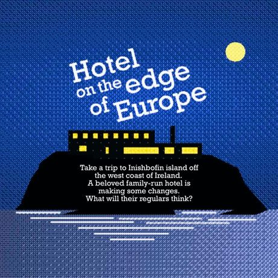
Hotel on the edge of Europe
I've been going to Inishbofin, with a group of friends every Easter for years.
-
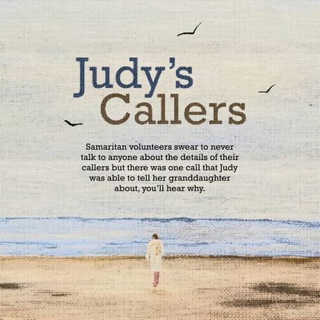
Judy’s Callers
Lucy's grandmother Judy was a volunteer with the Samaritans for 30 years, on their phone line. She's always wanted to ask her about what it was like, being on the end of those calls but Samaritan volunteers swear to never talk to anyone about the details of their callers but there was one call that Judy was able to tell Lucy about, and you’ll hear why.
-
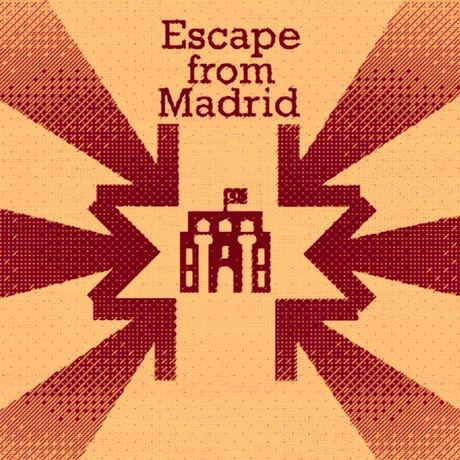
Escape from Madrid
Pablo De Miguel tells the little known story of how Turkish diplomats saved the lives of 1,000 refugees during the Spanish Civil War’s longest siege. It involves espionage, international negotiations and murder but above all else it's a story about the fight for survival and the determination to get home.
-
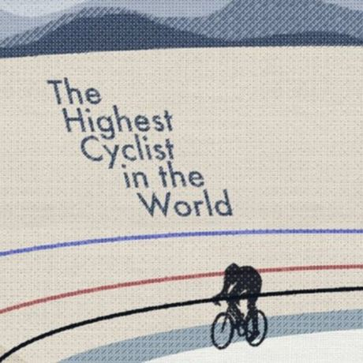
The Highest Cyclist in the World
In 2007 the legendary Scottish track cyclist Sir Chris Hoy set out to break the 1km time trial world record. The record and then only sub one minute 1km time was set by Hoy's longtime rival- Arnaud Tournant. Hoy was determined to go sub one minute himself and even more determined to snatch the record away from the french cyclist.
-
The Stalker
"I had no contact with this man. All I ever said was hello to him. It's stalking. And it builds and builds."
-
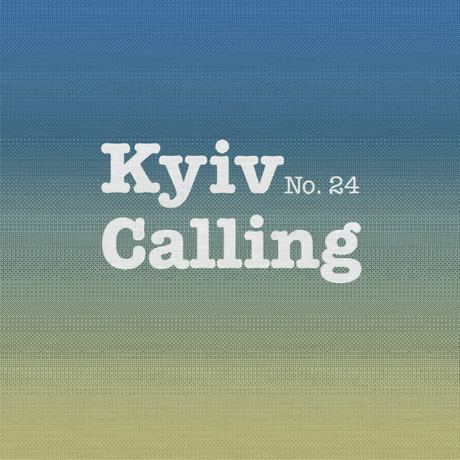
Kyiv Calling
It is Day 6 of the Russian invasion of Ukraine.
-
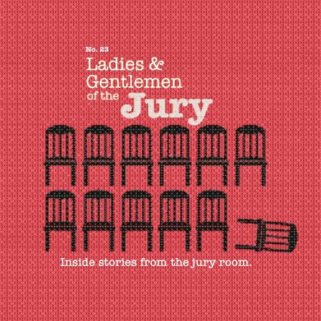
Ladies and Gentlemen of the Jury
I wanted to see inside this secretive world and get a sense of what it feels like to serve. I talked to 7 former jurors about their 7 separate trials. I also talked to a practicing criminal law barrister for his thoughts on the jury system. We’ll explore the selection process, the characters in the courtroom and the atmosphere in the jury deliberation room. We’ll also do a deep dive into a few cases and hear them told from a juror's perspective in their own words.
-
Lone Actor Terrorism
We speak to Dr. Francis O’Connor, an expert on lone actor radicalisation. Dr. O’Connor and his colleagues have been funded by the EU Commission to research lone actor attacks. They have collected what they think is the largest dataset of lone actor attacks and attackers in the western world, dating from 1990 until the present.
-
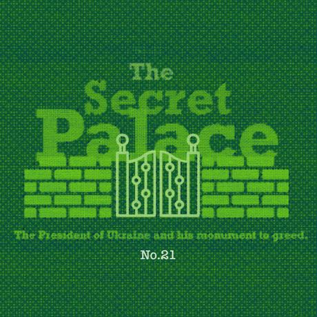
The Secret Palace
We visit the Mezhyhirya estate in Ukraine.
-
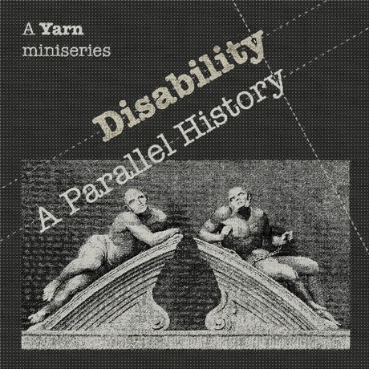
Disability: A Parallel History
In this new Yarn Podcast Miniseries we’re going to give you a rough history of disability.
-
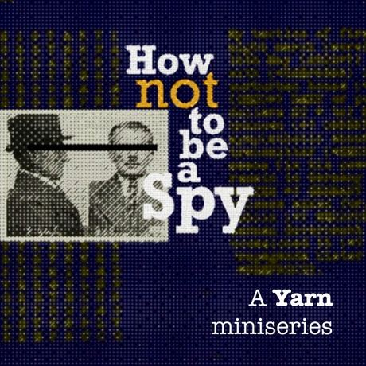
How Not to Be a Spy
For our third season we focus on one story in this two part Docu-Drama. The true story of Hermann Goertz, the Nazi spy who landed in neutral Ireland during the Second World War, on a mission to meet the IRA and organise a German-led invasion of Northern Ireland.
-
Stammer
My friend Dermot has a stammer. He’s had one as long as I’ve known him. Like most people I didn’t take much notice of it. After all, everyone stumbles over words sometimes don’t they? Whats the big deal? I certainly didn’t think about what was happening behind the stammer. The thoughts, the anxiety and all the tricks being employed under the surface of what most would consider a minor blip in someone's speech. In this documentary Dermot tells us about the secret war he waged every time he spoke.
-
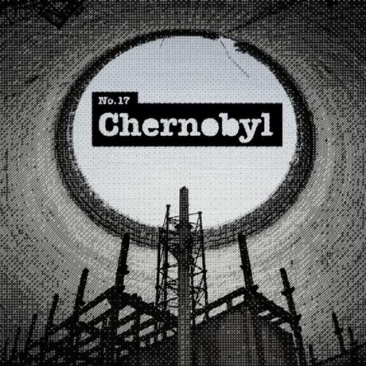
Chernobyl
We spend two days exploring the Chernobyl exclusion zone and we stay overnight, in Chernobyl’s only functioning hotel.
-
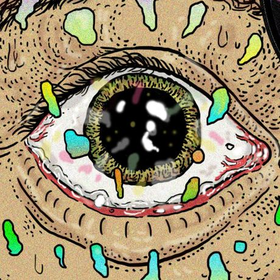
Eyes Don't Lie
On patrol with a drug recognition expert. We go on a ride along in New York State with a police officer who's specialty is to determine if drivers are impaired by drugs.
-
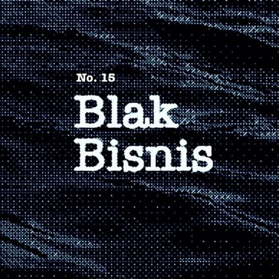
Blak Bisnis
Modern piracy and the hijacking of the Petro Ranger. You probably don’t think of pirates as wearing expensive suits and working in high rise office buildings. In the 90’s the biggest pirates of South East Asia were impossible to tell apart from high powered business people. It was hard to tell them apart because they could be both. This is the true story of one of the most sophisticated pirate syndicates in South East Asia and its mythic leader Mister Wong.
-
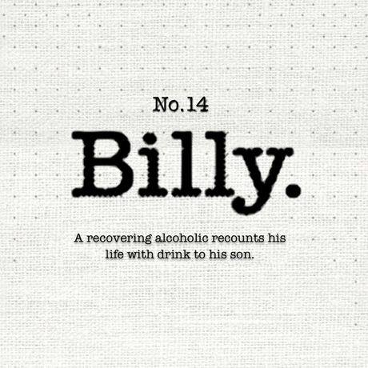
Billy
"I treated it like it was my best friend but in fact it was my worst enemy".
-
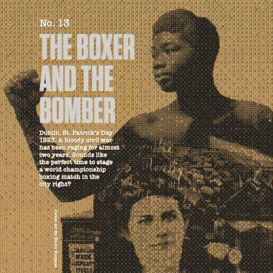
The Boxer and the Bomber
An audio drama based on a true story.
-
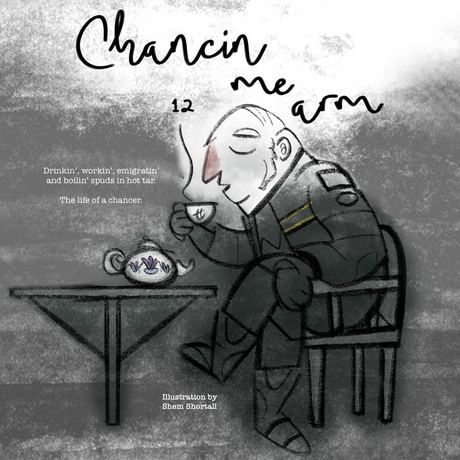
Chancin' Me Arm
A dramatic monologue. Drinkin’, workin’, emigratin’ and boilin’ spuds in hot tar. The life of a chancer.
-
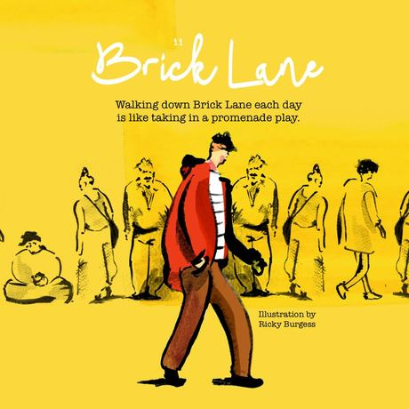
Brick Lane
Walk with the narrator on a six minute stroll down one of London's most famous streets. You'll meet its inhabitants and visitors, all to a thumping music beat.
-
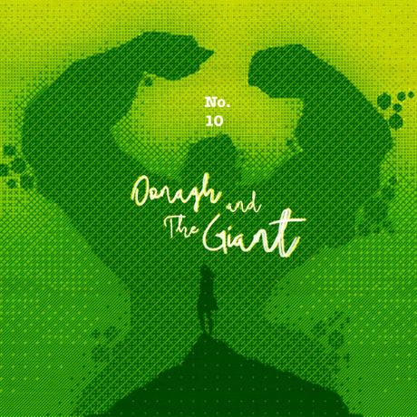
Oonagh and the Giant
The Irish legend of how the Giant’s Causeway came to be. A mythic audio drama tale.
-
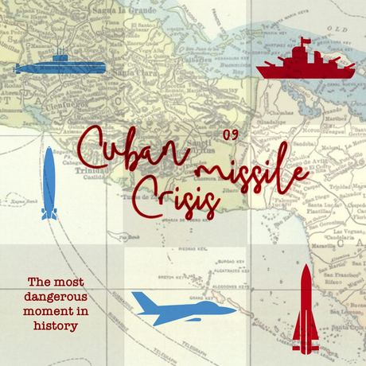
Cuban Missile Crisis
October 1962. A bold move on the Cold War chessboard makes America very nervous. Russia installs nuclear missiles in revolutionary Cuba and points them directly at the US. Life as we know it becomes increasingly precarious as communication between Moscow and Washington breaks down. Meanwhile, naval personnel on the Caribbean seas sense they have their finger on far more than a trigger. Yarn 09 is the story of the Cuban Missile Crisis. We explore the ideological and technological that created history's most dangerous moment and ask who the heroes really were?
-
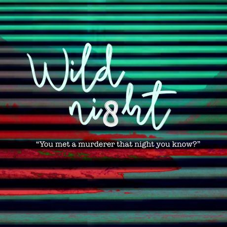
Wild Night
A night out to the pub in rural Ireland leads to gossip and ends in murder. A true crime audio drama.
-
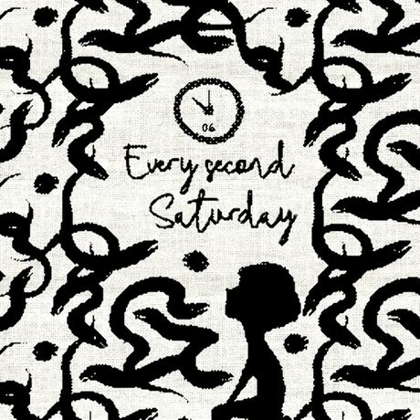
Every Second Saturday
An emotional short story about the effect divorce and shared custody has on children and parents.
-
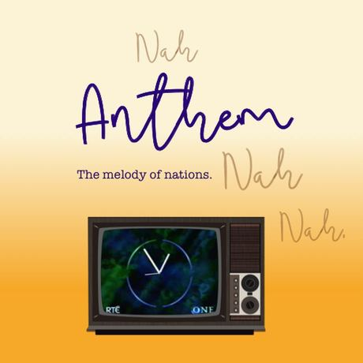
Anthem
The melody of nations Respected and revered, the national anthem is a country's musical tribute to itself. But in a world so splintered, are songs invoking God, love of country and bloody slaughter the ones we need to be singing? Yarn 06 is melodic journey through some of the world's most famous national anthems. On the way, we get up close and personal with the triumphant tribalism at the heart of a nation's sense of self.
-
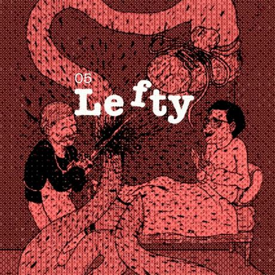
Lefty
When you think one of your legs is possessed. I have cerebral palsy. It mainly affects my left leg. Lefty tries to disrupt my life whenever possible, especially in public or in sensitive situations. Eventually, enough is enough and my doctors come up with an unusual plan to pacify Lefty but he's not going to like it.
-
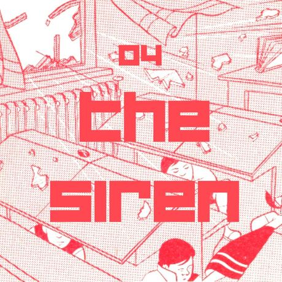
The Siren
An accidental sounding of the Civil Defence Siren causes one concerned citizen to get a little too concerned. What results is a haphazard journey through childhood fears and the history of hysteria in a sleepy Irish town. Featuring medieval witchcraft, military history and Ireland's preparations for the end of all things.
-
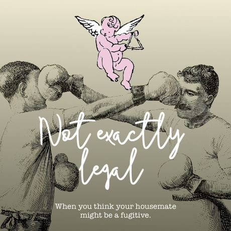
Not Exactly Legal
When you think your housemate might be a fugitive. An autobiographical audio drama.
-
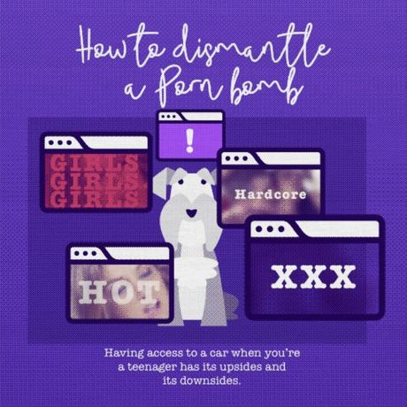
How to Dismantle a Porn Bomb
Having access to a car when you’re a teenager has its upsides and its downsides. An autobiographical audio drama
-
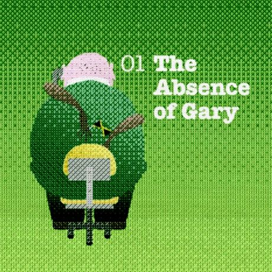
The Absence of Gary
Excuses from the world’s worst employee. An autobiographical audio drama. Our first episode and a fan favourite.
No episodes in that season.
Extras
Side projects, a walking tour and podcast production.
-
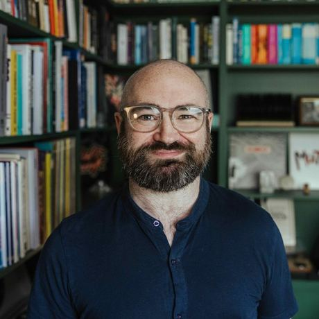
Yarn Podcast Production
Looking to create a podcast that captivates listeners? Whether it's a personal project or a commercial production, I offer expert podcast production services to bring your vision to life — crafted by the award-winning producer of Yarn, winner of Best Factual Podcast at the Irish Podcast Awards.
-
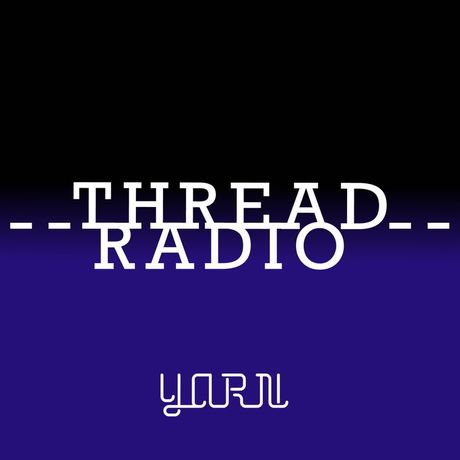
Thread Radio
From the makers of the Yarn story podcast comes this radio show. Dedicated to recommending podcasts, movies, documentaries, YouTube channels, music.. basically anything that makes a sound.
-
Audio Walking tour
Discover Kilkenny’s Epic History on Your Own Terms! This self-guided audio walking tour is the perfect way to explore The Marble City.